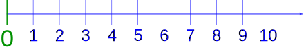
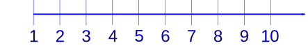

Whole Numbers and Integers
Whole Numbers
Whole Numbers are simply the numbers 0, 1, 2, 3, 4, 5, ... (and so on)

No Fractions!
Examples: 0, 7, 212 and 1023 are all whole numbers
(But numbers like ½, 1.1 and −5 are not whole numbers.)
Counting Numbers
Counting Numbers are Whole Numbers, but without the zero. Because you can't "count" zero.

So they are 1, 2, 3, 4, 5, ... (and so on).
Natural Numbers
"Natural Numbers" can mean either "Counting Numbers" {1, 2, 3, ...}, or "Whole Numbers" {0, 1, 2, 3, ...}, depending on the subject.
Integers
Integers are like whole numbers, but they also include negative numbers ... but still no fractions allowed!

So, integers can be negative {−1, −2,−3, −4, ... }, positive {1, 2, 3, 4, ... }, or zero {0}
We can put that all together like this:
Integers = { ..., −4, −3, −2, −1, 0, 1, 2, 3, 4, ... }
Examples: −16, −3, 0, 1 and 198 are all integers.
(But numbers like ½, 1.1 and 3.5 are not integers)
These are all integers (click to mark), and they continue left and right infinitely:
Some People Have Different Definitions!
Some people (not me) say that whole numbers can also be negative, which makes them exactly the same as integers.
And some people say that zero is NOT a whole number. So there you go, not everyone agrees on a simple thing!
My Standard
I usually stick to this:
|
Name |
Numbers |
Examples |
|
Whole Numbers |
{ 0, 1, 2, 3, 4, ... } |
0, 27,398, 2345 |
|
Counting Numbers |
{ 1, 2, 3, 4, ... } |
1, 18, 27, 2061 |
|
Integers |
{ ... −4, −3, −2, −1, 0, 1, 2, 3, 4, ... } |
−15, 0, 27, 1102 |
And everyone agrees on the definition of an integer, so when in doubt say "integer".
And when you only want positive integers, say "positive integers". It is not only accurate, it makes you sound intelligent. Like this (note: zero isn't positive or negative):
- Integers = { ..., −4, −3, −2, −1, 0, 1, 2, 3, 4, ... }
- Negative Integers = { ..., −4, −3, −2, −1 }
- Positive Integers = { 1, 2, 3, 4, ... }
- Non-Negative Integers = { 0, 1, 2, 3, 4, ... } (includes zero, see?)
Other Numbers
For an interesting look at other types of numbers read The Evolution of Numbers